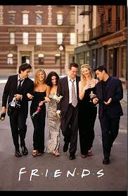
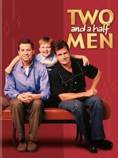

SITECOM (SITUATIONAL COMEDY)
Friends (1994-2004)
"I'll be there for you."

Rachel Green, Ross Geller, Monica Geller, Joey Tribbiani, Chandler Bing and Phoebe Buffay are six 20 something year-olds, living off of one another in the heart of New York City. Over the course of ten years, this average group of buddies goes through massive mayhem, family trouble, past and future romances, fights, laughs, tears and surprises as they learn what it really means to be a friend. Though the series is 35 years old, it is still loved by people of all age groups all over world.
Genres : Comedy, Romance
No. of Seasons: 10
Available on Netflix
Review: 8.9/10 ⭐
Big Bang Theory (2007-2019)
"Smart is the new Sexy."
Leonard Hofstadter and Sheldon Cooper are both brilliant physicists working at Cal Tech in Pasadena, California. They are colleagues, best friends, and roommates, although in all capacities their relationship is always tested primarily by Sheldon's regimented, deeply eccentric, and non-conventional ways. They are also friends with their Cal Tech colleagues mechanical engineer Howard Wolowitz and astrophysicist Rajesh Koothrappali. The foursome spend their time working on their individual work projects, playing video games, watching science-fiction movies, or reading comic books. As they are self-professed nerds, all have little or no luck with women. When Penny, a pretty woman and an aspiring actress from Omaha, moves into the apartment across the hall from Leonard and Sheldon's, Leonard has another aspiration in life, namely to get Penny to be his girlfriend.
Genres : Comedy, Romance
No. of Seasons: 12
Available on Netflix and Amazon Prime
Review: 8.1/10 ⭐
Young Sheldon (2017- )
"Mighty Little Man"

It's 1989 and 9-year-old Sheldon Cooper has skipped four grades to start high school along with his less-intellectual older brother. As he struggles to be understood by his family, classmates and neighbours, his mother arms him with the best tool she can come up with: reminding bullies his dad is the football coach and his brother is on the team. His twin sister doesn't share his exceptional mind, but she has a much clearer vision of what life has in store for the young genius. Jim Parsons, who plays the adult version of Sheldon on "The Big Bang Theory (2007)"
Genres : Comedy
No. of Seasons: 3
Available on Amazon Prime
Review: 7.4/10 ⭐
Black-ish (2014- )
"The family that pranks together, stays together."
Black-ish follows an upper middle class African-American family led by Andre 'Dre' Johnson (Anthony Anderson) and Rainbow Johnson (Tracee Ellis Ross). The show revolves around the family's lives, as they juggle several personal and sociopolitical issues. The show also features the characters Zoey Johnson (Yara Shahidi), Andre Johnson, Jr. (Marcus Scribner), Jack Johnson (Miles Brown), and Diane Johnson (Marsai Martin).
Genres : Comedy
No. of Seasons: 6
Available on Disney+hotstar
Review: 7.1/10 ⭐
Two and a Half Men (2003-2015)
"Two Adults. One Kid. No Grown-ups."

The Harper brothers Charlie and Alan are almost opposites but form a great team. They have little in common except their dislike for their mundane, maternally cold and domineering mother, Evelyn. Alan, a compulsively neat chiropractor and control-freak, is thrown out by his manipulative wife Judith who nevertheless gets him to pay for everything and do most jobs in the house. Charlie is a freelance jingle composer and irresistible Cassanova who lives in a luxurious beach-house and rarely gets up before noon. Charlie "temporarily" allows Alan and his son Jake, a food-obsessed, lazy kid who shuttles between his parents, to move in with them after Alan's separation/divorce. The sitcom revolves around their conflicting lifestyles, raising Jake (who has the efficient, caring dad while having a ball with his fun-loving sugar uncle who teaches him boyish things), and bantering with Evelyn and various other friends and family. Other fairly regular characters include Charlie's cleaning lady Berta and his rich, self-confessed stalker neighbor Rose who often sneaks in to spy on Charlie.
Genres : Comedy,Romance
No. of Seasons: 12
Available on Netflix and Amazon Prime
Review: 7.1/10 ⭐
Grown-ish (2018- )
"The people need to get comfortable feeling uncomfortable."
Grown-ish is a spin-off show of Black-ish.A contemporary take on the current issues facing both students and administrators in the world of higher education. Yara Shahidi portrays Zoey - Dre (Anthony Anderson) and Rainbow's (Tracee Ellis Ross) popular, entitled, stylish and socially active 17-year-old daughter - as she heads off to college and quickly discovers that not everything goes her way once she leaves the nest.
Genres : Comedy
No. of Seasons: 2
Available on Disney+hotstar
Review: 6.4/10 ⭐
Back